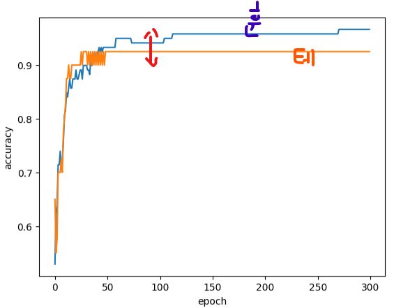

혼자 공부하는 머신러닝 04
확률적 경사 하강법, 에포크 개념
훈련 세트를 사용해 최적 포인트를 찾아 조금씩 이동하는 알고리즘
1. 데이터 준비
import pandas as pd
fish = pd.read_csv('https://bit.ly/fish_csv')
fish_input = fish.iloc[:,1:].to_numpy()
fish_target = fish['Species'].to_numpy()
from sklearn.model_selection import train_test_split
train_input, test_input, train_target, test_target = train_test_split(
fish_input, fish_target, random_state=42)
from sklearn.preprocessing import StandardScaler
ss= StandardScaler()
ss.fit(train_input)
train_scaled = ss.transform(train_input)
test_scaled = ss.transform(test_input)
.
.
2. 확률적 경사 하강법
## 확률적 경사 하강법 제공하는 분류용 클래스
## 분류일 때라서 Classifier
from sklearn.linear_model import SGDScaler
sc = SGDScaler(loss='log_loss', max_iter=10, random_state=42)
sc.fit(train_scaled, train_target)
print(sc.score(train_scaled, train_target)) #0.773109243697479
print(sc.score(test_scaled, test_target)) #0.775
### ConvergenceWarning: Maximum number of iteration reached before convergence. Consider increasing max_iter to improve the fit.
## max_iter=10으로 둬서 워닝 메시지
max_iter =10으로 뒀을 때 정확도가 77퍼 밖에 안된다.
partial_fit() 메서드 사용해서 1 에포크씩 이어서 훈련
## 세 번 반복했을 때 결과값
sc.partial_fit(train_scaled, train_target)
print(sc.score(train_scaled, train_target)) # 0.8571428571428571
print(sc.score(test_scaled, test_target)) #0.85
.
.
3. 과소적합, 과대적합
| 과소적합 (Underfitting) | 과대적합 (Overfitting) | |
|---|---|---|
| 정의 | 모델이 너무 단순해서 학습을 제대로 못함 | 모델이 너무 복잡해서 훈련 데이터에 과하게 맞춤 |
| 특징 | 훈련 정확도도 낮고, 테스트 정확도도 낮음 | 훈련 정확도는 높지만, 테스트 정확도는 낮음 |
| 원인 |
|
|
| 해결법 |
|
|
.
| 상황 | 훈련 정확도 | 테스트 정확도 | 상태 |
|---|---|---|---|
| A | 60% | 58% | 과소적합 |
| B | 99% | 65% | 과대적합 |
| C | 92% | 90% | 적절 (일반화 잘 됨) |
.
훈련 데이터에 대해:
- 과소적합: 직선 하나로 모든 걸 설명하려 함 (너무 단순)
- 과대적합: 점 하나하나에 맞춘 곡선 (너무 복잡)
- 적절한 모델: 데이터의 흐름을 잘 따르는 곡선
.
.
4. 적절한 에포크 값 찾기
import numpy as np
sc = SGDClassifier(loss='log_loss', random_state=42)
train_score=[]
test_score=[]
classes = np.unique(train_target)
for _ in range(0,300):
sc.partial_fit(train_scaled, train_target, classes=classes)
train_score.append(sc.score(train_scaled, train_target))
test_score.append(sc.score(test_scaled, test_target))
import matplotlib.pyplot as plt
plt.plot(train_score)
plt.plot(test_score)
plt.xlabel('epoch')
plt.ylabel('accuracy')
plt.show()

100 에포크 이후로는 과대적합
sc = SGDClassifier(loss='log_loss', max_iter=100, tol=None, random_state=42)
sc.fit(train_scaled, train_target)
print(sc.score(train_scaled, train_target)) # 0.957983193277311
print(sc.score(test_scaled, test_target)) #0.925
.
.
SGDClassifier의 loss 매개 변수 기본은 hinge
sc = SGDClassifier(loss='hinge', max_iter=100, tol=None, random_state=42)
sc.fit(train_scaled, train_target)
print(sc.score(train_scaled, train_target)) #0.9495798319327731
print(sc.score(test_scaled, test_target)) #0.925